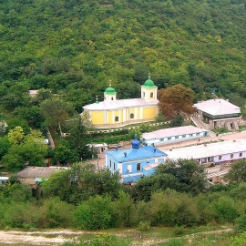
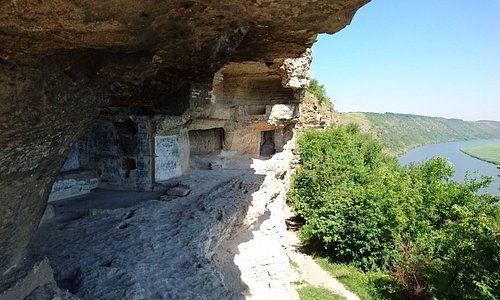

MĂNĂSTIREA ȚÎPOVA

Mănăstirea „Adormirea Maicii Domnului” din Țipova este o mănăstire rupestră de călugări din
Republica Moldova.
Este situată pe malul drept al râului Nistru în apropiere de satul Țipova din raionul Rezina.
Biserica datează din secolele XVI-XVII. Mănăstirea este de rit ortodox și adăpostea 9 viețuitori în anul 2012.
Ea se găsește la o distanță de aproximativ 40,50 km de capitala țării, Chișinău, și este amplasată
pe un mal abrupt la o înălțime de 100 de metri față de nivelul apei râului Nistru.

Complexul mănăstiresc se întinde pe trei nivele numărând mai multe încăperi și trei biserici
(Sfânta Cruce - secolele XI-XII; Sfântul Nicolae - secolul XIV și Adormirea Maicii Domnului - secolele XVI-XVIII).
Clopotnița, chiliile și celelalte încăperi sunt mai noi datând din secolul al XIX-lea. Cele peste 20 de încăperi
comunică între ele prin tuneluri, galerii și scări, încăperea cea mai mare fiind biserica Adormirii Maicii Domnului.
Complexul mănăstiresc este săpat în calcar și nimic altceva.
Mănăstirea Țipova este înconjurată de apele râului Nistru și de pârâul Țipova care trecând prin stâncile de calcar
formează frumoase cascade, unele dintre acestea ajungând la o înălțime de până la 16,05 metri. Pe una dintre
colinele învecinate se găsesc resturile unei cetăți dacice.